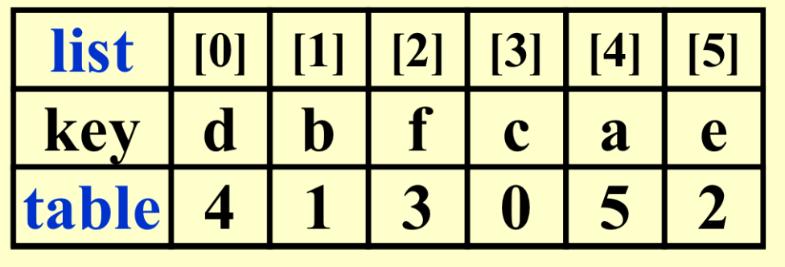
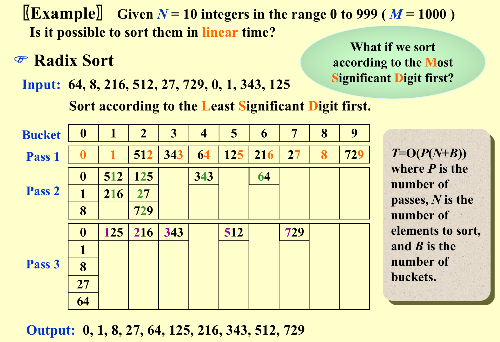

Sort
Simple Sort¶
Algorithm¶
Bubble sort¶
Basic
void bubbleSort(int arr[], int n) {
for (int i = 0; i < n - 1; i++) {
for (int j = 0; j < n - i - 1; j++) {
if (arr[j] > arr[j + 1]) {
int temp = arr[j];
arr[j] = arr[j + 1];
arr[j + 1] = temp;
}
}
}
}
Improvement
void bubbleSort_recursive(int a[],int begin,int end,int n){
if(end>begin){
int lastswap=-1;
for(int i=begin;i<end;i++){
if(a[i]>a[i+1]){
int m=a[i];
a[i]=a[i+1];
a[i+1]=m;
lastswap=i;
}
}
end=lastswap;
sort(a,begin,end,n);
}
void bubbleSort_iter (int a[], int n){
int lastswap, end;
for (int i=0;i<n-1;i++) {
lastswap = -1;
for (int j=0;j<end;j++) {
if (a[j] > a[j + 1]) {
exchange(&a[j], &a[j + 1]);
lastswap = j;
}
}
end = lastswap;
}
}
Selection sort¶
void selectionSort(int arr[], int n) {
int i, j, min_idx;
// 外层循环遍历未排序部分
for (i = 0; i <n-1;i++) {
// 假设当前未排序部分的第一个元素为最小
min_idx = i;
// 内层循环在未排序部分中找到最小元素的索引
for (j=i+1;j<n;j++) {
if (arr[j] < arr[min_idx]) {
min_idx = j;
}
}
// 将找到的最小元素与未排序部分的第一个元素交换位置
swap(&arr[min_idx], &arr[i]);
}
}
Insertion Sort¶
void InsertionSort ( ElementType A[ ], int N ){
int j,P;
ElementType Tmp;
for(P=1;P<N;P++){
Tmp=A[p];
for(j=P;j>0&&A[j-1]>Tmp;j--){
A[j]=A[j-1];
}
A[j]=Tmp;
}
}
The worst case:Input \(A[ \ \ ]\) is in reverse order. \(T( N ) = O( N^2 )\)
Analysis¶
- A Lower Bound for Simple Sorting Algorithms
- An inversion in an array of numbers is any ordered pair \(( i, j )\) having the property that \(i < j\) but \(A[i] > A[j]\).
- Swapping two adjacent elements that are out of place removes exactly one inversion.
-
\(T ( N, I )\) = \(O( I+N )\) where \(I\) is the number of inversions in the original array.
-
The average number of inversions in an array of N distinct numbers is \(N ( N +1 ) / 4\).
- Any algorithm that sorts by exchanging adjacent elements requires \(\Omega( N^2 )\) time on average.
Shell sort¶
Original Shell Sequence: The original sequence suggested by Donald Shell was to use gaps of
n/2,n/4,n/8, ...,1. This is a simple and effective sequence, often called the "original Shell sequence." It is easy to implement and works well in practice.Knuth's Sequence: Donald Knuth suggested a formula for computing gaps, which is
3^k - 1fork = 0, 1, 2, .... This sequence often performs well in practice.Sedgewick's Sequence: Robert Sedgewick proposed a sequence that interleaves powers of 2 and 3:
1, 5, 19, 41, 109, 209, 505, .... It combines the simplicity of the original Shell sequence with the effectiveness of the Knuth sequence.the terms are either of the form \(9\times 4^i -9\times 2^i + 1\) or \(4^i -3\times 2^i + 1\). \(T_{avg} ( N ) = O ( N^{7/6} )\) and \(T_{worst} ( N ) = O ( N^{4/3} )\).int sedgewick[] = {1, 5, 19, 41, 109, 209, 505, ...}; // Extend as needed int sedgewickIndex = 0; for (int gap = sedgewick[sedgewickIndex]; gap > 0; gap = sedgewick[++sedgewickIndex]) { // Shell sort logic }
void shellSort(int arr[], int n) {
// ps:we can choose any ideal sequence suitable for given cases
for (int gap = n/2; gap > 0; gap /= 2) {
for (int i = gap; i < n; i++) {
int temp = arr[i];
int j;
for (j = i; j >= gap && arr[j - gap] > temp; j -= gap) {
arr[j] = arr[j - gap];
}
arr[j] = temp;
}
}
}
Worst-Case Analysis:¶
The worst-case running time of Shellsort, using Shell's increments, is \(O(N^2)\).
* example : 1 9 2 10 3 11 4 12 5 13 6 14
Hibbard's Increment Sequence:¶
\(h_k = 2^k -1\) ---- consecutive increments have no common factors. The worst-case running time of Shellsort, using Hibbard's increments, is \(O( N^{3/2})\).
Heap Sort¶
Algorithm 1:¶
Algorithm 1:
{
BuildHeap( H ); //O(N)
for (int i=0; i<N; i++ ){
TmpH[ i ] = DeleteMin( H );O(logN)
}
for ( i=0; i<N; i++ ){
H[ i ] = TmpH[ i ];
}
}
Algorithm 2:¶
Review
void PercolateDown( int p, PriorityQueue H ){ int temp=H->Elements[p]; int parent,son; for(parent=p;parent*2<=H->Size;parent=son){ son=parent*2; if(son<H->Size&&H->Elements[son]<H->Elements[son+1]){ son++; } if(temp>=H->Elements[son]){break;} else{H->Elements[parent]=H->Elements[son];} } H->Elements[parent]=temp; }
void Heapsort( ElementType A[ ], int N )
{ int i;
for ( i = N / 2; i >= 0; i - - ) /* BuildHeap */ {PercDown( A, i, N ); }
for ( i = N - 1; i > 0; i - - ) {
Swap( &A[ 0 ], &A[ i ] ); /* DeleteMax */
PercDown( A, 0, i );
}
}
Although Heapsort gives the best average time, in practice it is slower than a version of Shellsort that uses Sedgewick's increment sequence.
Mergesort¶
void Mergesort( ElementType A[ ], int N );
void MSort( ElementType A[ ], ElementType TmpArray[ ],int Left,int Right);
void Merge( ElementType A[ ], ElementType TmpArray[ ],int Lpos,int Rpos, int RightEnd);
void Mergesort( ElementType A[ ], int N ) {
ElementType *TmpArray; /* need O(N) extra space */
TmpArray = malloc( N * sizeof( ElementType ) );
if ( TmpArray != NULL ) {
MSort( A, TmpArray, 0, N - 1 );
free( TmpArray );
}
else FatalError( "No space for tmp array!!!" );
}
void MSort( ElementType A[ ], ElementType TmpArray[ ],int Left, int Right){
int Center;
if ( Left < Right ) { /* if there are elements to be sorted */
Center = ( Left + Right ) / 2;
MSort( A, TmpArray, Left, Center ); /* T( N / 2 ) */
MSort( A, TmpArray, Center + 1, Right ); /* T( N / 2 ) */
Merge( A, TmpArray, Left, Center + 1, Right ); /* O( N ) */
}
}
/* Lpos = start of left half, Rpos = start of right half */
void Merge( ElementType A[ ], ElementType TmpArray[ ], int Lpos, int Rpos, int RightEnd ) {
int i, LeftEnd, NumElements, TmpPos;
LeftEnd = Rpos - 1;
TmpPos = Lpos;
NumElements = RightEnd - Lpos + 1;
while(Lpos<=LeftEnd && Rpos<=RightEnd){
if(A[Lpos]<=A[Rpos]){TmpArray[TmpPos++]=A[Lpos++];}
else{TmpArray[TmpPos++]=A[Rpos++];}
}
while(Lpos<=LeftEnd){TmpArray[ TmpPos++ ] = A[ Lpos++ ];}
while(Rpos<=RightEnd){TmpArray[ TmpPos++ ] = A[ Rpos++ ];}
for( i = 0; i < NumElements; i++, RightEnd - - )
/* Copy TmpArray back */
A[ RightEnd ] = TmpArray[ RightEnd ];
}
/** version2 **/
void Merge2( ElementType A[ ], ElementType TmpArray[ ], int Lpos, int Rpos, int RightEnd ) {
int i, LeftEnd, NumElements, TmpPos;
LeftEnd = Rpos - 1;
TmpPos = Lpos;
NumElements = RightEnd - Lpos + 1;
for(int i=0;i<NumElements;i++){
if((Lpos<=LeftEnd)&&(Rpos>RightEnd||A[Lpos]<=A[Rpos])){TmpArray[i]=A[Lpos++];}
else{TmpArray[TmpPos++]=A[Rpos++];}
}
}
/** version3 **/
void CopyArray(int B[],int iBegin,int iEnd,int A[]);
void Merge (int A[],int ileft,int iright,int iend,int B[]);
void BottomupMergeSort(int A[],int B[],int n){
for(int width=1;width<n;width=width*2){
for(int i=0;i<n;i=i+2*width){
Merge(A,i,min(i+width,n),min(i+2*width,n),B);
}
CopyArray(B,0,n,A);
}
}
// (iBegin,iEnd]
void Merge (int A[],int ileft,int iright,int iend,int B[]){
int i=ileft,j=iright;
for(int k=ileft;k<iend;k++){
if(i<iright&&(j>=iend||A[i]<=A[j])){
B[k]=A[i++];
}
else{B[k]=A[j++];}
}
}
Complexity¶
\(T(n)=2T(n/2)+O(n)\) → \(O(nlogn)\) Note: Mergesort requires linear extra memory, and copying an array is slow. It is hardly ever used for internal sorting, but is quite useful for external sorting.
Quick Sort¶
Picking the Pivot¶
A Safe Maneuver: \(Pivot = random\ select\ from\ A[\ \ ]\)
Median-of-Three Partitioning : \(Pivot\ = median ( left, center, right )\)
- Select the elements at the leftmost, center, and rightmost positions of the array.
- Calculate the median among these three elements, i.e., identify the element that is the middle value.
- Set the median as the pivot element.
Eliminates the bad case for sorted input and actually reduces the running time by about 5%.
Small Arrays¶
Problem: Quicksort is slower than insertion sort for small N ( \(\le\)20 ).
Solution : Cutoff when N gets small ( e.g. N = 10 ) and use other efficient algorithms (such as insertion sort).
Implementation¶
- 双指针
void Quicksort( ElementType A[ ], int N )
{
Qsort( A, 0, N - 1 );
/* A: the array */
/* 0: Left index */
/* N – 1: Right index */
}
/* Return median of Left, Center, and Right */
/* Order these and hide the pivot */
ElementType Median3( ElementType A[ ], int Left, int Right )
{
int Center = ( Left + Right ) / 2;
if ( A[ Left ] > A[ Center ] )
Swap( &A[ Left ], &A[ Center ] );
if ( A[ Left ] > A[ Right ] )
Swap( &A[ Left ], &A[ Right ] );
if ( A[ Center ] > A[ Right ] )
Swap( &A[ Center ], &A[ Right ] );
/* Invariant: A[ Left ] <= A[ Center ] <= A[ Right ] */
Swap( &A[ Center ], &A[ Right - 1 ] ); /* Hide pivot */
/* only need to sort A[ Left + 1 ] … A[ Right – 2 ] */
return A[ Right - 1 ]; /* Return pivot */
}
void Qsort( ElementType A[ ], int Left, int Right )
{ int i, j;
ElementType Pivot;
if( Left + Cutoff <= Right ){ /* if the sequence is not too short */
Pivot = Median3( A, Left, Right ); /* select pivot */
i = Left;
j = Right – 1; /* why not set Left+1 and Right-2? */
for( ; ; ) {
while ( A[ ++i ] < Pivot ) { } /* scan from left */
while ( A[ ––j ] > Pivot ) { } /* scan from right */
if ( i < j ) {Swap( &A[ i ], &A[ j ] ); } /* adjust partition */
else {break; } /* partition done */
}
Swap( &A[ i ], &A[ Right - 1 ] ); /* restore pivot */
Qsort( A, Left, i - 1 ); /* recursively sort left part */
Qsort( A, i + 1, Right ); /* recursively sort right part */
} /* end if - the sequence is long */
else /* do an insertion sort on the short subarray */
{InsertionSort( A + Left, Right - Left + 1 );}
}
Sorting Large Structures¶
Swapping large structures can be very much expensive.
- Add a pointer field to the structure and swap pointers instead – indirect sorting.

- Physically rearrange the structures at last if it is really necessary. In the worst case there are \([N/2]\)(down) cycles and requires \([3N/2]\) (down) record moves. \(T = O( m N )\) where m is the size of a structure
A General Lower Bound for Sorting¶
Any algorithm that sorts by comparisons only must have a worst case computing time of \(\Omega( N log N )\).
When sorting N distinct elements, there are \(N!\) (N factorial) different possible sorting outcomes. This arises from the numerous ways of arranging the elements, with \(N\) choices for the first element, \(N-1\) choices for the second, and so forth, yielding a total of \(N!\).
In the context of decision trees representing the decision-making process of comparison-based sorting algorithms, the number of leaves in the tree is at least \(N!\). Each leaf node signifies a distinct sorting outcome.
The relationship between the height of the decision tree \((k)\) and complete binary trees is emphasized. For a complete binary tree with \(k\) levels, it can have at most \(2^{k-1}\) leaves. Combining this with the earlier discussion, the inequality \(N! ≤ 2^{k-1}\) is established, where k is the height of the decision tree.
Expressing the relationship between height and N! using logarithms, we find that \(k ≥ log(N!) + 1\).
- Logarithms are preferred due to their intuitive representation of exponential growth in tree height.
These insights delineate theoretical limits for comparison-based sorting algorithms and underscore the significance of N log N as the theoretical lower bound for their time complexity.
Bucket Sort and Radix Sort¶
Bucket Sort \(T(N,M)=O(M+N)\)¶
Algorithm{
initialize count[ ];
while (read in a student’s record)
insert to list count[stdnt.grade];
for (i=0; i<M; i++) {
if (count[i])
output list count[i];
}
}
Radix Sort¶

Stableness¶
- 稳定排序：冒泡、归并、插入、基数
- 不稳定排序：快排、希尔、堆排、选择
创建日期: 2023年12月5日 15:33:59